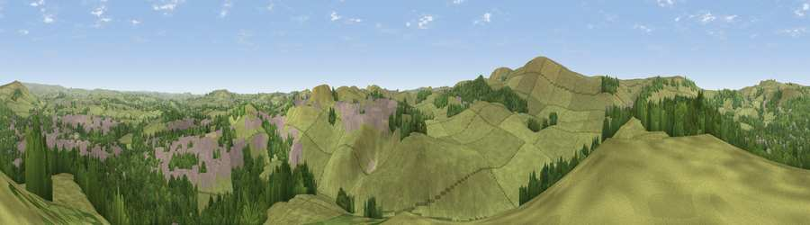

Grin Low
#16678 in England · top 24% of its area beats it · near Harpur HillWhere it is
The exact computed spot (SK 05425 71725). Click the marker for map links.
The view, rendered

A 360° render of this exact spot computed from the terrain model, tree cover and land cover — summer colours, afternoon light, calibrated against photographs of famous viewpoints. Real trees, hedges and buildings will differ in detail.
The panorama
Grey silhouette: terrain skyline in each direction (720 bearings, Earth curvature and refraction included). Dashed green: skyline with trees (+15 m) and buildings (+8 m) as obstacles. Blue strip: how far the ground is visible on each bearing.
Where the view opens
Wedge length = distance to the farthest visible ground on that bearing (vegetation-aware). Rings at 10, 25 and 50 km.
What fills the view
67% grassland · 21% woodland · 11% built-up
Angular shares of the visible panorama (visual magnitude), not map area. Landscape diversity 0.39 (0–1 Shannon).
Key numbers
More beautiful places nearby
The staircase of upgrades: each row has a higher view potential than everything closer. Driving times are estimates from straight-line distance, calibrated against real road routing — check an actual route before setting out.
| Place | Direction | Drive | Score |
|---|---|---|---|
| Fox Low | ESE · 1 km | ~4 min | 57.9 |
| Viewpoint near Burbage | WSW · 2 km | ~6 min | 69.2 |
| Axe Edge | SW · 3 km | ~8 min | 69.7 |
| Shining Tor | WNW · 6 km | ~13 min | 72.7 |
| Viewpoint near Meerbrook | SW · 9 km | ~18 min | 73.5 |
| Viewpoint near Timbersbrook | WSW · 17 km | ~30 min | 74.4 |
| Tissington Hill | SSE · 21 km | ~36 min | 75.5 |
| Viewpoint near Mow Cop | SW · 24 km | ~39 min | 78.9 |
53.24252, -1.92017 · source: osm peak · position refined by local search. Computed location — check access rights before visiting.